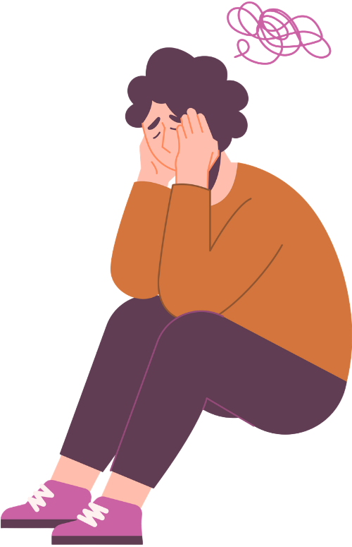
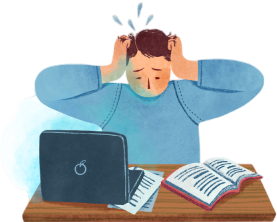
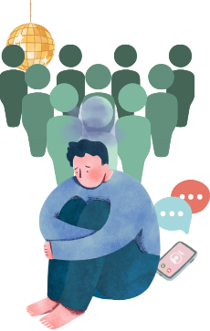

Vous vous sentez épuisé·e, vidé·e, au bout du rouleau ?
Vous ne feriez pas un burn-out ?
Le burn-out est un syndrome d'épuisement résultant d'un stress chronique non géré, qui se manifeste par un épuisement physique, émotionnel et mental. Contrairement aux idées reçues, les études scientifiques montrent qu'il ne se limite pas au travail : d'autres composantes liées à la vie privée ou à la personne peuvent également être en cause.
Votre épuisement peut être professionnel (lié au travail), parental (lié aux responsabilités familiales), relationnel (causé par des relations toxiques), personnel (surcharge mentale ou émotionnelle dans la vie personnelle en général), ou neurodivergent, plus aussi appelé épuisement post-masking (si vous êtes autiste ou TDAH, et confronté(e) à un décalage constant avec les attentes neurotypiques).
Le test suivant vous aidera à identifier précisément votre situation et à trouver les solutions adaptées.

Un burn-out, mais lequel ?
Burn-out professionnel

Le burn-out professionnel est un épuisement résultant d'un stress chronique au travail. Il se caractérise par trois dimensions principales : l'épuisement émotionnel intense, le cynisme ou désengagement vis-à-vis du travail, et la diminution du sentiment d'accomplissement professionnel.
Les principaux facteurs sont majoritairement organisationnels : charge de travail excessive, manque d'autonomie ou de reconnaissance, conflits de valeurs, relations difficiles au travail, et objectifs irréalistes. Contrairement aux idées reçues, 60 à 65% des causes de burn-out au travail proviennent de l'organisation du travail, contre seulement 30 à 35% de facteurs individuels. Les personnes travaillant dans des rôles d'aidants (infirmier·es, enseignant·es, travailleurs sociaux,...), de services aux clients (vendeur·euses, serveur·euses,...) ou étant généralement très solicitées dans le cadre de leur travail, sont souvent plus représentées dans ce type de burn-out.
Les symptômes touchent plusieurs sphères : physique (fatigue chronique, grande difficulté à se lever le matin, troubles du sommeil, douleurs dorsales, maux de tête), émotionnelle (irritabilité, anxiété, sentiment de vide), et cognitive (difficultés de concentration, troubles de la mémoire, baisse de performance).
Ce burn-out évolue en quatre étapes : d'abord l'excès de stress chronique, puis la phase de résistance où la personne tente de compenser en essayant de maintenir son rythme de travail, ensuite l'épuisement avec perte d'énergie et de motivation, et enfin le burn-out complet, où fonctionner normalement devient impossible.
Les solutions combinent repos nécessaire, accompagnement psychologique (thérapies cognitivo-comportementales, sophrologie), réorganisation du travail, et prévention active. Il est essentiel de consulter rapidement un médecin dès les premiers signes. La prévention passe par l'établissement de limites claires, l'amélioration de l'équilibre vie professionnelle-vie personnelle, le soutien social, et une culture d'entreprise bienveillante. Le burn-out n'est pas une fatalité : reconnaître les signaux d'alerte permet d'agir avant le point de rupture !
Burn-out parental
Le burn-out parental est un syndrome d'épuisement qui touche les parents exposés à un stress chronique dans leur rôle parental, sans ressources suffisantes pour compenser. Il se caractérise par quatre dimensions principales : l'épuisement physique, émotionnel et cognitif dans le rôle de parent, la saturation et la perte de plaisir liée à la parentalité, la distanciation affective avec les enfants, et le contraste douloureux entre le parent que l'on était et celui que l'on est devenu.
Les principaux facteurs de risque incluent la quête de perfection parentale, le manque de soutien conjugal ou familial, les difficultés relationnelles dans le couple, les traits de personnalité perfectionnistes, la charge mentale excessive, l'absence de temps pour soi, et les circonstances de vie difficiles comme avoir un enfant avec des besoins particuliers ou vivre en famille monoparentale.
Les symptômes touchent plusieurs sphères : physique (fatigue intense persistante, troubles du sommeil, maux de tête et de ventre), émotionnelle (irritabilité, sentiment de vide, culpabilité, perte d'estime de soi), et dans la relation avec les enfants (désengagement, écoute distraite, réduction des manifestations d'affection, sentiment d'être en mode survie).
Le burn-out parental évolue progressivement : d'abord l'excès de stress parental chronique, puis la phase de résistance où le parent tente de compenser en s'investissant davantage, ensuite l'épuisement avec perte d'énergie et de plaisir, et enfin le burn-out complet où le parent ne se reconnaît plus et ne parvient plus à fonctionner normalement dans son rôle parental.
Les solutions combinent plusieurs approches : consultation rapide d'un professionnel de santé dès les premiers signes, accompagnement psychologique privilégiant les thérapies cognitivo-comportementales ou la thérapie interpersonnelle, réorganisation de l'équilibre risques-ressources, participation à des groupes de parole, pratiques de gestion du stress (yoga, méditation, sophrologie), délégation des tâches, et réappropriation de temps pour soi. La prévention passe par l'abandon de l'idéal du parent parfait, le renforcement du soutien social, et l'acceptation de ses limites. Il est essentiel de briser le silence et de demander de l'aide, sans culpabilité.
Burn-out relationnel

Le burn-out relationnel est un état d’épuisement émotionnel qui apparaît lorsqu’une ou plusieurs relations (de couple, amicale ou familiale) deviennent source de stress continu, de tensions répétées ou de déséquilibre affectif. Il se caractérise par une impression de ne plus avoir l’énergie psychique nécessaire pour communiquer, se connecter à l’autre ou résoudre les conflits. Les recherches sur l’« emotional exhaustion in close relationships » montrent que cet état survient quand les demandes relationnelles dépassent durablement les ressources émotionnelles disponibles.
Les facteurs principaux comprennent : des conflits répétés, une communication dégradée, un manque de soutien émotionnel, une charge affective trop lourde, l’impression de donner davantage que l’on reçoit, ou encore des attentes irréalistes au sein de la relation.
Les symptômes incluent : fatigue émotionnelle, irritabilité, distanciation affective, perte d’intérêt pour les moments partagés, hypersensibilité aux tensions, sentiment de saturation, diminution de l’empathie et parfois cynisme ou résignation.
L’évolution suit généralement plusieurs étapes : l'accumulation de tensions mène à un sentiment d'injustice ou de déséquilibre, qui entraîne progressivement une perte d'énergie émotionnelle, puis un retrait et une distanciation vis à vis des personnes concernées, jusqu'à aboutir à un épuisement relationnel.
Les solutions reposent principalement sur : la restauration des ressources personnelles, la mise en place de limites saines, l’amélioration de la communication, des temps de pause dans les interactions, la répartition équilibrée des efforts émotionnels, et, si nécessaire, un accompagnement thérapeutique (thérapie de couple, TCC ou approche systémique). Ces interventions ont démontré leur efficacité pour réduire le stress relationnel et restaurer le fonctionnement du lien.
Burn-out personnel
Le burn-out personnel désigne un état d’épuisement qui ne dépend pas d’un rôle particulier (travail, parentalité...), mais touche l’ensemble de la vie quotidienne. Selon le Copenhagen Burnout Inventory, il correspond au degré d’épuisement ressenti par la personne elle-même, indépendamment de son contexte professionnel. Il apparaît généralement lorsque les demandes quotidiennes dépassent durablement les ressources disponibles, entraînant une véritable surchauffe du système de stress.
Les facteurs les plus fréquents incluent le stress chronique, la surcharge émotionnelle, un manque de récupération, des responsabilités accumulées ou des situations de vie éprouvantes.
Les principaux symptômes sont une fatigue intense qui ne disparaît pas malgré le repos, une diminution de la motivation, une irritabilité inhabituelle, des troubles du sommeil, des difficultés de concentration et une perte d’intérêt pour les activités habituellement plaisantes. Le burn-out personnel se développe souvent par étapes : surcharge prolongée, perte progressive d’énergie, effondrement des ressources, puis sentiment d’être “à bout”.
Il se distingue de la dépression : dans le burn-out, l’épuisement est primaire et lié à un stress prolongé, alors que la dépression implique un trouble global de l’humeur, des affects négatifs persistants et souvent une perte de plaisir plus marquée. Cependant, un burn-out non pris en charge peut évoluer vers une dépression.
Les solutions validées incluent la réduction du stress et la restauration progressive des ressources, l’amélioration du sommeil, la recherche de soutien social, ainsi que des approches thérapeutiques comme la TCC, l’ACT ou les programmes de pleine conscience, toutes reconnues pour aider à sortir de l’épuisement émotionnel.
Burn-out post-masking
Le burn-out post-masking est un état d’épuisement qui survient chez les personne neurodivergentes (ayant de l'autisme, des troubles de l'attention...) après une période prolongée de "masking" - le masking constituant l'ensemble des efforts mis en place pour cacher volontairement ses traits neurodivergents, afin de paraître “neurotypique” (c'est à dire sans autisme, ou sans TDAH...) dans les interactions sociales, professionnelles ou scolaires. Cette stratégie d’adaptation, bien qu’utile pour s’intégrer, demande un effort cognitif et émotionnel intense, et peut conduire à un épuisement profond lorsque le "masque" ne peut plus être maintenu ou lorsque la personne relâche ses efforts.
Les principaux facteurs du burn-out post-masking incluent l’effort constant pour ajuster son comportement et ses émotions, des environnements peu accommodants, la peur du jugement ou du rejet, l’absence d’espaces sûrs pour se montrer authentique et un déséquilibre entre les efforts fournis et le soutien reçu.
Les symptômes typiques sont une fatigue mentale et physique intense, une irritabilité ou anxiété accrues, des troubles de l’humeur, une distanciation sociale, une perte d’intérêt pour les interactions, des crises émotionnelles (comme des “meltdowns” ou “shutdowns”) et une baisse générale du fonctionnement quotidien, parfois accompagnée d’un sentiment de perte d’identité. Chez les personnes neurodivergentes non-diagnostiquées ou non-suivies, ce type de burn-out peut parfois passer inaperçu, car ses symptômes ressemblent à ceux des autres types de burn-out. Le burn-out post-masking peut toutefois se déclencher même dans un environnement social ou professionnel sain, le stress résidant surtout dans la maintenance constante du masque social.
Le burn-out post-masking se développe généralement selon plusieurs étapes : d’abord une période prolongée de masking, puis l’accumulation du stress et de la fatigue émotionnelle, suivie de la dégradation progressive de la santé mentale et physique. Lorsque la personne ne peut plus maintenir le masque ou tente de relâcher le camouflage, l’épuisement relationnel et cognitif s’installe, formant le burn-out post-masking.
Les solutions et stratégies pour prévenir ou atténuer ce burn-out reposent avant tout sur la reconnaissance de l’expérience et la compréhension des coûts du masking, tant par la personne neurodivergente que par son entourage. On conseille également la création d’espaces sûrs pour "laisser tomber le masque", la mise en place d’accommodements neuro-inclusifs au travail ou à l’école, la pratique d’activités de récupération et de self-care adaptées, ainsi que l’accompagnement professionnel par un thérapeute ou un coach spécialisé. Sensibiliser l’entourage et les institutions aux impacts du masking contribue également à réduire la pression sur la personne.